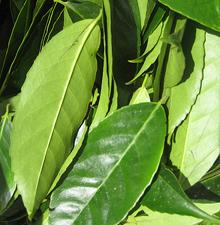
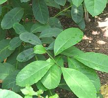
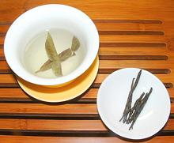

Magnolias

SAFARI
Users
Guayusa
 [Ilex guayusa]
This tree, which grows to about 100 feet, is native to the Amazon Rainforest of Ecuador. Natives have long harvested the leaves, tied them into bundles and dried them to use in making a highly caffinated tea.
This leaf is now being promoted by the health food industry as yet
another "super food". Powders are being used in a number of formulations.
Aside from caffeine, the leaves contain theobromine, usually found in
chocolate, and substances similar to those found in green tea. They are
also very high in antioxidants, much higher than green tea.
Photo by Anna Premo distributed under license
Free Art License v1.3.
Yerba Mate
 [Yerbe mate (Spanish); Erva mate (Portuguese); Ilex paraguariensis]
This shrub, which can grow to about 49 feet, is native to southern Brazil
and Paraguay. It's leaves are harvested to make a caffinated tea, often
called "mate", which is very popular in the Southern Cone of South
America, particularly Uruguay. It is also popular in Syria and Lebanon,
imported from Argentina.
Details and Cooking
Photo from United States Botanic Garden distributed under
license Creative Commons
Attribution-ShareAlike 3.0 Unported.
Kaushue
 [Ilex kaushue]
This tree, growing to about 28 feet, is native to most of China. Curled
dried leaves are used to make a caffinated bitter tea called Ku Ding Cha,
literally "bitter nails tea", said to have significant medicinal
properties. In Sichuan and Japan this tea is more often made from a
Privet, Ligustrum robustum, in which case it will not be
caffinated.
Photo by Shizuha distributed under license Creative Commons
Attribution-ShareAlike 3.0 Unported.